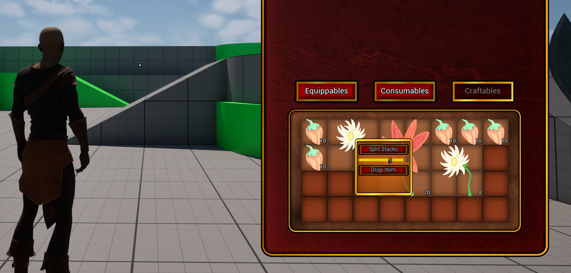
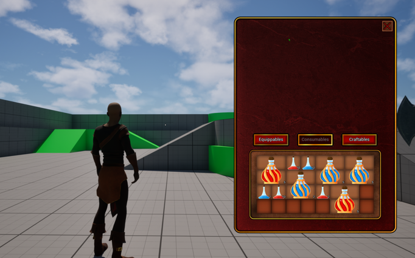

UE5 C++ Modular Inventory System Plugin
A modular, data-driven inventory plugin for Unreal Engine 5, focused on grid-based placement, stackable items, item fragments, UMG integration, and multiplayer-ready replication.
Overview
the purpose of the demo is to give a small bitesize breakdown of the modular plugin inventory system I am in middle of developing for my portfolio.
This is a modular inventory system built in Unreal Engine 5.7. The system was built using C++ and UMG. It supports grid-based item placement, stacking, UI interaction, and is designed to be partially data-driven and extensible.
Technical Highlights
- Optimised inventory replication using
FFastArraySerializer. - Fragment-based item data for scalable item behaviour and configuration.
- Grid placement and stacking logic designed for RPG/survival-style inventory systems.
- Plugin-based structure using Unreal Public/Private module organisation.
- UMG integration for visible gameplay-facing interaction.
Items in the plugin can occupy multiple grid slots, which can also be configured per item type. The system validates placement and prevents invalid overlap. It supports stacking, splitting, and context menu actions. We utilise inheritance also, meaning that, the items derive from a base item class, but each child class is specialised such that it can have its own unique fragments. Fragments can be thought of as parts of a jigsaw that form a complete picture. While each piece can execute its own functionality, for example, a consumable, might derive from the base class, but has fragments that are specific, so that it can be consumed.

System Purpose
So why design it this way? Mainly to provide a way of keeping functionality between unique items separate, and keeping communication belonging to each class or in this case each fragment. The FFastArraySerializer feature in Unreal provides a more optimised way of replicating arrays. For example, to replicate an array that contains 100 items, when sending information to clients it has to send the entire array to each relevant client, this can get very expensive. Instead, FFastArraySerializer provides an optimised way of handling this problem. Rather than having the whole array replicated, we add items to a list, and we replicate what changed in that list not the whole array.
The fragmented design pattern allows for items having the functionality only they need, because a consumable has a consumable fragment, with consumable functionality, that does not need to be the case on an item like a sword, traditional inheritance can get wildly complex as the items for a given project widen, or become more complex, making it difficult to keep logic specific to the class that needs the logic. With this fragmented design that solves the problem. A sword would not have a consumable fragment, thus will handle no consumable code.

Finally, another gem is the composite UMG pattern I opted for, which can be analogous to a tree. For example, we have a base class, which can be considered the trunk, we have a composite base which can be thought of as a branch on that trunk. Finally, we have the leafs of the branches. When the item descriptions contain all possible combinations of items, the composite pattern I opted for allows us to easily collapse items that are not needed.
So we assimilate these widgets, from the trunk to the leaf. What essentially happens, is when an item is hovered over, the “Trunk” which is the Item_Description UMG, tells all its child “Branches” to update, all the “Branches” tell all their “Leafs” to update. This is to say that The trunk does not need to know about the leaf, only the branches, each branch only needs to be considered with connecting branches, and its own leafs. This loops for every branch, all the way up to the leaf. It acts as a means to route the information to the leaf for the leaf to do what it needs to do, avoiding complex inheritance structures and a multitude of widgets, delegates ect to ensure widgets have the correct information contained within them.
Code Access
Full source can be shared privately with hiring teams on request. Public presentation includes demos, architecture notes, and selected snippets. You are welcome to download a playable build of the files these are freely available. 👉: Google Drive Link